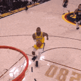

Nba 2k24 ratings
Kyrie Irving 2k24 rating
Lebron James 2k24 rating
 Kyrie
has an Overall 2K Rating of 90 with a Playmaking 3-Level Scorer Build. He has a total of 32 Badges in which 3 of them are Hall of Fame Level and 15 are Gold Level. The best aspect of Irving's game on 2K is his Outside Scoring. With an outstanding 97 Mid-Range Shot Rating, he scores efficiently when shooting the ball from the perimeter. More importantly, his 84 Three-Point Shot Rating makes him a serious threat when shooting from behind the arc.
The above line graph shows his NBA 2K24 Rating Season Movement while below are his Attributes, Badges, Hot Zones and 2K Rating Over the Years.
Kyrie
has an Overall 2K Rating of 90 with a Playmaking 3-Level Scorer Build. He has a total of 32 Badges in which 3 of them are Hall of Fame Level and 15 are Gold Level. The best aspect of Irving's game on 2K is his Outside Scoring. With an outstanding 97 Mid-Range Shot Rating, he scores efficiently when shooting the ball from the perimeter. More importantly, his 84 Three-Point Shot Rating makes him a serious threat when shooting from behind the arc.
The above line graph shows his NBA 2K24 Rating Season Movement while below are his Attributes, Badges, Hot Zones and 2K Rating Over the Years.

 Lebron
On NBA 2K24, the Current Version of LeBron James has an Overall 2K Rating of 96 with a 2-Way 3-Level Point Forward Build. He has a total of 4 Badges. The best aspect of James' game on 2K is his Athleticism. With a lethal 99 Stamina Rating, he will not get exhausted quickly even when on the floor for a substantial continuous playtime. In addition, his decent 75 Three-Point Shot Rating makes him a threat when left wide open behind the three-point line.
The above line graph shows his NBA 2K24 Rating Season Movement while below are his Attributes, Badges, Hot Zones and 2K Rating Over the Years.
This current version of LeBron James is the team captain of the Western Conference All-Stars in the 2023 NBA All-Star Game.
Lebron
On NBA 2K24, the Current Version of LeBron James has an Overall 2K Rating of 96 with a 2-Way 3-Level Point Forward Build. He has a total of 4 Badges. The best aspect of James' game on 2K is his Athleticism. With a lethal 99 Stamina Rating, he will not get exhausted quickly even when on the floor for a substantial continuous playtime. In addition, his decent 75 Three-Point Shot Rating makes him a threat when left wide open behind the three-point line.
The above line graph shows his NBA 2K24 Rating Season Movement while below are his Attributes, Badges, Hot Zones and 2K Rating Over the Years.
This current version of LeBron James is the team captain of the Western Conference All-Stars in the 2023 NBA All-Star Game.

Back to Top